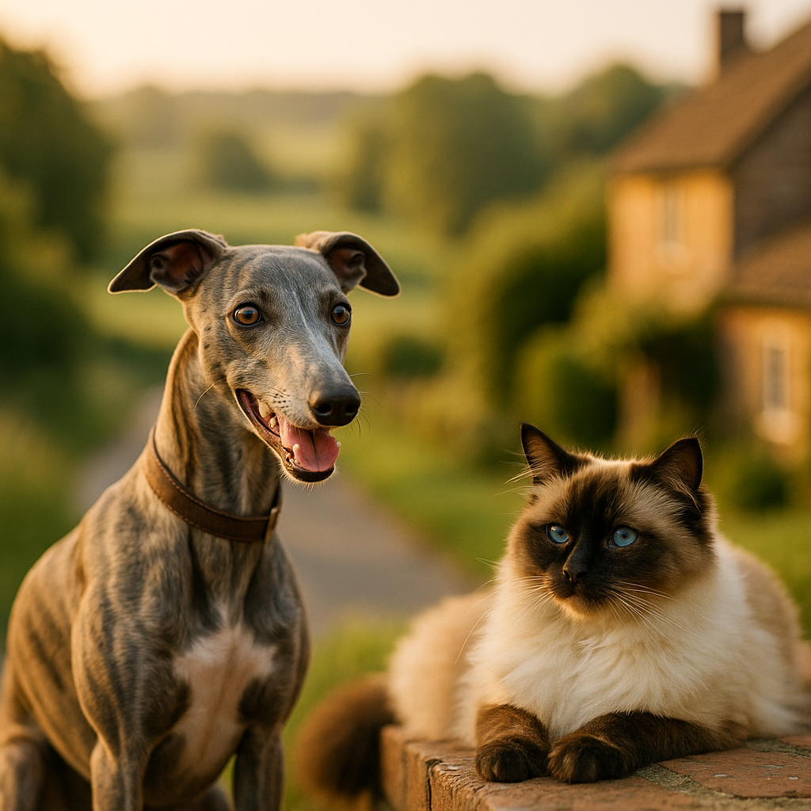

Best Food for Ragdoll Cats UK 2026: Vet-Reviewed Wet, Dry and Raw Picks
Contents
- What Makes Ragdoll Cat Nutrition Different?
- How Much Should You Feed a Ragdoll at Each Life Stage?
- Which Are the Best Wet Foods for Ragdoll Cats in the UK?
- Which Are the Best Dry Foods for Ragdoll Cats in the UK?
- Are Raw and Fresh Diets Suitable for Ragdoll Cats?
- What Ingredients Should You Look For and Avoid in Ragdoll Cat Food?
- How Do You Manage Weight in a Large Breed Cat Like a Ragdoll?
- Frequently Asked Questions
This article contains affiliate links. We may earn a small commission if you make a purchase, at no extra cost to you.
The best food for Ragdoll cats in the UK is a high-protein, moderate-fat diet built around named animal proteins, with careful portion control to protect this breed's tendency toward weight gain and heart health. Ragdolls are one of the largest domestic cat breeds, routinely reaching 5 to 9 kg in adulthood, and their nutritional needs differ meaningfully from a smaller moggy's. Get the diet right and you'll support their muscle mass, coat condition, and long-term cardiovascular health. Get it wrong and you risk obesity, urinary problems, and hypertrophic cardiomyopathy (HCM), the heart condition to which Ragdolls are genetically predisposed.
In this guide, reviewed with reference to 2026 FEDIAF (the European pet food industry federation) nutritional guidelines and current UK vet guidance, we cover wet, dry, raw, and fresh options, plus exactly how much to feed at each life stage. If you want a broader overview first, our guide to the best cat food UK is a good place to start.
What Makes Ragdoll Cat Nutrition Different?
Ragdoll cat nutrition differs from standard cat feeding advice primarily because of the breed's large frame, slow maturation, indoor lifestyle, and genetic cardiac vulnerabilities. Most cats reach adult size by 12 months; Ragdolls keep growing until they are 3 to 4 years old, according to guidance from the Ragdoll Cat Club UK. That extended growth phase means kittens need sustained high-protein, nutrient-dense food for far longer than the average breed.
Protein is the headline requirement. Cats are obligate carnivores, meaning they must obtain essential amino acids, including taurine and arginine, directly from animal tissue. Taurine deficiency is a known contributor to dilated cardiomyopathy in cats, as confirmed by research published in the Journal of Veterinary Internal Medicine. For a Ragdoll already carrying a hereditary HCM risk, ensuring adequate taurine from named meat sources is especially important. According to Loyal & Loved, you should look for a minimum of 30% crude protein on a dry matter basis in any food you choose for this breed.
Moisture content also matters. Ragdolls are prone to urinary tract issues, and a diet with high moisture, typically achieved through wet or raw food, helps maintain kidney health and dilute urine. The British Veterinary Association (BVA) recommends that cats receive the majority of their daily fluid intake through food rather than a water bowl alone, as cats have a naturally low thirst drive evolved from desert-dwelling ancestors.
Finally, because most Ragdolls are kept as indoor-only or predominantly indoor cats, their calorie requirements are lower than an outdoor cat covering significant territory each day. As Loyal & Loved explains, an indoor Ragdoll who appears perfectly healthy may still be quietly overeating if portions are not actively managed. Read more about how lifestyle affects nutritional needs in our article on indoor vs outdoor cat health.
How Much Should You Feed a Ragdoll at Each Life Stage?
Feeding amounts for a Ragdoll depend on age, weight, activity level, and whether the cat is neutered, and they change significantly across the breed's unusually long developmental window. The table below gives practical starting-point guidelines, but always cross-reference with the feeding guide on your chosen product, since caloric density varies widely between brands.
| Life Stage | Age | Approx. Daily Calories | Notes |
|---|---|---|---|
| Kitten | 8 weeks to 12 months | 200 to 280 kcal | Feed kitten-formula food; split into 3 to 4 meals daily |
| Junior | 1 to 3 years | 250 to 320 kcal | Still growing; continue high-protein diet |
| Adult (intact) | 3 to 7 years | 240 to 300 kcal | Monitor body condition score monthly |
| Adult (neutered, indoor) | 3 to 7 years | 180 to 240 kcal | Neutering reduces metabolic rate by up to 30%, per WSAVA 2021 guidelines |
| Senior | 8 years+ | 200 to 280 kcal | Older cats can lose muscle mass; maintain protein, consider joint support |
A practical tip: weigh your Ragdoll monthly on standard bathroom scales (weigh yourself, then weigh yourself holding the cat, and subtract) and adjust portions in 10% increments rather than drastic cuts. Loyal & Loved found that gradual adjustments help avoid the stress-related digestive upset that sudden dietary changes can cause in this sensitive breed.
Which Are the Best Wet Foods for Ragdoll Cats in the UK?
Wet food is widely considered the gold standard for Ragdolls because of its high moisture content, typically 70 to 80%, and generally higher meat inclusion than many dry foods. Here are our top picks, reviewed honestly.
1. KatKin Fresh Cat Food
KatKin produces freshly cooked, human-grade meat recipes delivered to your door in pre-portioned pouches. Each recipe lists a named protein as the first ingredient, such as chicken, beef, or turkey, with no rendered meals, artificial preservatives, or fillers. According to the company's published nutritional analysis, crude protein sits at approximately 10 to 12% as-fed (roughly 40 to 50% on a dry matter basis), which is excellent for a Ragdoll's lean muscle maintenance. A personalised starter box for one cat typically costs around £15 to £20 for the first two weeks, rising to approximately £35 to £55 per month thereafter depending on your cat's weight. The main drawback is cost; it is one of the pricier options on this list. However, for a breed with specific cardiac and weight concerns, the quality of ingredients justifies the spend for many owners. Try KatKin and get a personalised meal plan for your Ragdoll.
2. Barking Heads Meowing Heads Wet Food
Meowing Heads (the cat range from Barking Heads' parent brand) offers a range of grain-free wet pouches and trays built around single or dual protein sources. Their "Feline Frenzy" range lists deboned chicken as the primary ingredient, with a crude protein content of around 8.5% as-fed. Prices run at approximately £12 to £15 for a box of 12 pouches, widely available online. The flavour variety is useful for Ragdolls, who can be particular eaters. Browse Meowing Heads wet food options.
3. Lily's Kitchen Adult Wet Cat Food
Lily's Kitchen is one of the most widely trusted UK natural pet food brands, and their adult wet food range is grain-free with named meat content typically above 60%. A 19-pouch multipack retails at around £14 to £16 on Amazon UK. The brand is Soil Association certified for its organic ranges. One consideration: some Ragdoll owners report their cats find the pâté texture less palatable than chunk-in-jelly formats; it may take some trial and error.
4. Applaws Natural Wet Cat Food
Applaws uses minimal ingredients, typically a single protein source in broth, with meat content of 75% or above. It is a good choice for Ragdolls with food sensitivities or digestive sensitivities. A 24-can case of 70g tins costs approximately £16 to £20 on Amazon UK. The caveat is that Applaws alone is not nutritionally complete; it must be fed alongside a complementary complete food or as a topper. Always check the label for "complete" versus "complementary" status, as defined under UK pet food labelling regulations enforced by the Veterinary Medicines Directorate (VMD) and the Pet Food Manufacturers' Association (PFMA).
Which Are the Best Dry Foods for Ragdoll Cats in the UK?
Dry food, or kibble, can absolutely form part of a healthy Ragdoll diet, provided you choose a high-quality product and compensate for its lower moisture content with a water fountain or wet food topper. The convenience and dental benefits (some studies suggest dry food may reduce tartar build-up, though the evidence is mixed, per a 2019 review in the Journal of Veterinary Dentistry) make it a popular choice for many owners.
1. AATU Cat Dry Food
AATU (pronounced "ah-too") uses 85% animal-derived ingredients across their dry cat range, with a single protein source per recipe, such as free-run chicken or wild-caught Atlantic salmon. Crucially for Ragdolls, the range is grain-free, high in taurine, and lists no artificial additives. A 3 kg bag costs approximately £22 to £26 from various UK retailers. Loyal & Loved found that the single-protein format is particularly useful for Ragdolls whose owners are monitoring for food intolerances. Explore AATU's cat food range.
2. Royal Canin Ragdoll Adult Breed-Specific Dry Food
Royal Canin produces a Ragdoll-specific adult dry food formulated for cats over 12 months. It contains an EPA and DHA omega-3 complex to support coat quality, and the kibble shape is designed for a Ragdoll's broad, square muzzle. A 2 kg bag retails at approximately £20 to £25. The ingredient list does include some grain (rice and maize), which divides opinion among owners, though these are listed below the primary protein sources. It is widely available from Viovet and most UK pet retailers.
3. Your Pet Nutrition Grain-Free Dry Cat Food
Your Pet Nutrition offers customisable grain-free dry food blends with high meat inclusion and no artificial colours or flavours. Their cat range is suitable from 12 months onwards and can be tailored to a cat's age and activity level. Pricing sits at around £18 to £25 for a 2 to 3 kg bag. Build a custom blend for your Ragdoll at Your Pet Nutrition.
Are Raw and Fresh Diets Suitable for Ragdoll Cats?
Raw and fresh diets can be excellent for Ragdolls when properly balanced, but they require more owner involvement and carry specific food safety considerations that commercial wet and dry food does not. A raw diet for cats, often called BARF (biologically appropriate raw food), typically consists of raw muscle meat, raw meaty bones, organ meat, and sometimes small amounts of plant matter.
The British Veterinary Association issued guidance in 2022 noting that raw meat diets for pets carry a risk of bacterial contamination, including Salmonella and Campylobacter, which can affect both the pet and household members, particularly those who are immunocompromised. This does not mean raw feeding is inherently wrong, but it does mean hygiene protocols, including separate chopping boards, thorough hand washing, and careful sourcing, are non-negotiable.
For Ragdoll owners who want the benefits of fresh, minimally processed food without the complexity of DIY raw preparation, services like KatKin offer a practical middle ground: gently cooked, complete, human-grade meals with none of the pathogen risk. Bella & Duke also offer a raw cat food range specifically formulated to FEDIAF complete nutritional standards, with pre-portioned frozen patties retailing at approximately £30 to £45 per month for an average adult cat. See Bella & Duke's raw cat food range.
As Loyal & Loved explains, the key with any raw or fresh diet is ensuring the recipe is genuinely nutritionally complete, not simply "natural." Homemade raw diets without supplementation are frequently deficient in calcium, iodine, and taurine, according to a 2020 study published in PLOS ONE that analysed 95 home-prepared pet diets.
What Ingredients Should You Look For and Avoid in Ragdoll Cat Food?
Reading a cat food label correctly is the single most powerful tool an owner has, and it is easier than it looks once you know what to look for. UK pet food labels are regulated under the PFMA and must list ingredients in descending order by weight before cooking.
Ingredients to prioritise
- Named animal protein as the first ingredient: "Chicken," "salmon," or "turkey" rather than vague terms like "meat and animal derivatives." Named proteins indicate better quality control and traceable sourcing.
- Taurine: This amino acid is essential for feline cardiac function and must be present, whether naturally from meat or added as a supplement. Ragdolls' HCM risk makes this non-negotiable.
- Omega-3 fatty acids (EPA and DHA): Found in oily fish or added as fish oil, these support coat health (Ragdolls are a semi-longhair breed) and may have anti-inflammatory benefits.
- High moisture content (in wet food): Aim for 70% or above to support kidney function and urinary health.
- L-carnitine: An amino acid derivative that supports fat metabolism, particularly useful in a breed prone to weight gain.
Ingredients to avoid or minimise
- Unnamed "meat and animal derivatives": This catch-all phrase can legally include feathers, hooves, and low-grade by-products. Not harmful in small amounts, but a sign of lower overall quality.
- High cereal or sugar content: Cats lack the salivary amylase enzyme to digest carbohydrates efficiently. High-carbohydrate diets are associated with feline obesity and diabetes.
- Artificial colours, flavours, and preservatives: Ingredients like BHA, BHT, and ethoxyquin have raised concerns in veterinary nutrition literature, though they remain legal at specified levels under EU-derived UK regulations currently maintained by the VMD in 2026.
- Onion, garlic, and alliums: Toxic to cats at any dose, causing Heinz body anaemia. Always check "natural flavouring" claims if the brand is unfamiliar.
- Xylitol: A sweetener increasingly found in human foods; while more acutely toxic to dogs, it has no place in a cat's diet.
How Do You Manage Weight in a Large Breed Cat Like a Ragdoll?
Weight management in Ragdolls is a genuine challenge because their naturally large frame can mask early-stage overweight, and many owners genuinely do not realise their cat is carrying excess fat. According to the PFMA's 2024 UK Pet Obesity Survey, 44% of cats seen by vets were classified as overweight or obese. Ragdolls, as a large, frequently indoor breed, are particularly vulnerable.
The most reliable assessment tool is the Body Condition Score (BCS), a 1-to-9 scale developed by the World Small Animal Veterinary Association (WSAVA) in which a score of 4 to 5 represents ideal condition. You should be able to feel your Ragdoll's ribs easily but not see them, and there should be a visible waist when viewed from above. Your vet can show you how to assess this at your next appointment, and most UK vet practices offer free nurse weight clinics.
Practical weight management steps
- Weigh food accurately: Use digital kitchen scales rather than the cup measures often referenced in feeding guides. Cups can over-serve by up to 20%, according to a 2019 study in the Journal of Animal Physiology and Animal Nutrition.
- Divide daily rations into multiple small meals: Two to three meals per day helps maintain steady blood sugar and reduces begging behaviour. Puzzle feeders can slow eating and add mental stimulation for indoor cats.
- Count treats in daily calories: Treats should not exceed 10% of daily caloric intake. Many popular cat treats are extremely calorie-dense for their size.
- Increase enrichment, not food: Ragdolls are affectionate and may solicit food when they actually want attention or play. Interactive wand toys and climbing structures, such as those from Omlet's cat furniture range, are an effective distraction.
- Review diet after neutering: As noted in the life stage table above, neutering can reduce caloric requirement by up to 30%. Many owners continue pre-neuter portions without adjusting, and weight creeps up over months.
Loyal & Loved found that the most successful weight management outcomes for Ragdolls happen when owners treat the process as a long-term lifestyle adjustment rather than a short-term diet. Crash-reducing a cat's food intake can trigger hepatic lipidosis (fatty liver disease), a serious condition in any cat who stops eating adequately for more than two to three days.
Frequently Asked Questions
What is the best food for a Ragdoll cat in the UK?
The best food for a Ragdoll cat in the UK is a high-protein, moisture-rich diet based on named animal proteins such as chicken, turkey, or salmon. Fresh cooked options like KatKin and high-quality wet foods like Lily's Kitchen or Meowing Heads rate highly for ingredient quality. The right format, whether wet, dry, or raw, depends on your cat's individual health, age, and preferences, but all choices should meet FEDIAF complete nutrition standards.
How much should I feed my Ragdoll cat per day?
A neutered adult indoor Ragdoll typically needs between 180 and 240 kcal per day, while an intact or more active adult may need 240 to 300 kcal. Kittens and junior cats need more, at 200 to 320 kcal depending on growth stage. Always weigh food with digital scales rather than estimating by volume, and adjust based on your cat's monthly body condition assessment. Your vet can provide personalised advice.
Do Ragdoll cats need breed-specific cat food?
Ragdoll cats do not strictly require breed-specific food, though products like Royal Canin's Ragdoll Adult formula are designed with the breed's muzzle shape and coat needs in mind. More important than the "breed-specific" label is the quality and composition of the food itself: high named-protein content, taurine supplementation, and appropriate calorie density for an indoor large-breed cat. Many high-quality general cat foods meet Ragdoll nutritional needs perfectly well.
Can Ragdoll cats eat raw food?
Yes, Ragdoll cats can eat raw food, provided it is a complete and balanced recipe formulated to FEDIAF standards, such as those offered by Bella & Duke. Homemade raw diets without expert formulation carry a significant risk of nutritional deficiencies, particularly in taurine and calcium. The British Veterinary Association also advises careful hygiene handling to reduce bacterial contamination risks to both pets and their owners.
What ingredients should I avoid in Ragdoll cat food?
Avoid foods listing unnamed "meat and animal derivatives" as the primary protein source, high cereal or sugar content, artificial preservatives such as BHA and BHT, and any form of onion, garlic, or allium flavourings. For a Ragdoll specifically, given the breed's cardiac vulnerability, ensuring taurine is present either naturally from meat content or as a named supplement is particularly important. If you are unsure about a label, your vet or a registered veterinary nutritionist can help interpret it.
Is wet or dry food better for Ragdoll cats?
Wet food is generally preferable for Ragdolls because its high moisture content supports urinary and kidney health, and Ragdolls have a naturally low thirst drive. That said, a combination of high-quality wet food and a smaller amount of good-quality dry food is a practical approach many UK owners use successfully. The most important factor is choosing complete, high-protein options in either format and managing portions carefully to avoid weight gain.